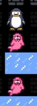

Descripció general
PenguinRunner és un joc en el qual controles un pingüí mitjançant el teclat. L'objectiu principal és recollir tot els gelats d'un nivell per desbloquejar una porta que et permetrà avaçar al següent nivell.
Com jugar?
Requisits: el joc està creat amb java, versió 24. Per executar el joc hauràs d'instal·lar el java JRE si no el tens instal·lat
Per executar el joc, basta executar l'arxiu .jar desde un terminal.
Parametres opcionals
- -skip: si no vols veure el menu al iniciar el joc
- -game / -g: per carregar un game, explicat a l'apartat d'addons del jocs
- -mod / -m: per carregar un mod, explicat a l'apartat d'addons del jocs
Controls del jugador
Moviment
↑↓←→
WASD
Fletxes del teclat o tecles WASD per moure el pingüí.
Habilitats
QE
Trencar blocs adjacents al jugador.
ZX
Seleccionar seguent o anterior objecte
F
Emprar objecte
Mecàniques del joc
- 🐧 El jugador controla un pingüí.
- 💥 El pingüí pot destruir alguns blocs o moure'n d'altres, més informació aquí
- 📦 Es poden recollir objectes del mapa, més informació a la pàgina d'objectes
- 👾 S'han evitar tots els enemics de diferents tipus del mapa
- 🍦 S'han de recollir tots els gelats del mapa.
- 🚪 Quan es recullen tots els gelats, s'activa una porta.
- ➡️ Les portes permeten accedir a altres nivells.
HUD

- El Display del joc et proporciona amb la següent informació:
- Vides: Representades com un sprite del jugador, si n'hi ha 3, en tens 3, i en perdràs una cada pic que un enemic te feri
- Gelats: La quantitat que tens i la que has d'aconseguir per passar de nivell
- Nivell: El nivell Actual
- Objectes: Quan tenguis un objecte, aquest panell sortirà, i actua d'invetari. S'ha de tenir en compte de que sempre hi ha 3 icones, i serveix com una ruleta, si tens un objecte només sempre veuràs el mateix objecte, en canvi, si en tens 2 de diferents aniràn alternant
- El nombre davall és la quantitat d'usos que tens restants per objectes que en tenen
Mecàniques avançades
- "Duplicat d'objectes": Quan carregues una partida, els objectes del mapa tornen a apareixer, pero recorda que només en pots dur un de cada!
- Boosting: si aconsegueixes posar-te damunt un enemic seeker, sempre i quan l'enemic pugui moure-se davall tu, ho farà
- OOB Teleporting: els objectes teleport NO se reinicien entre nivells, el qual pot ocasionar a mecàniques avançades per pasar nivells de forma creativa, encara que si intentes anar a un bloc que no existeix, hauràs de reiniciar el nivell
